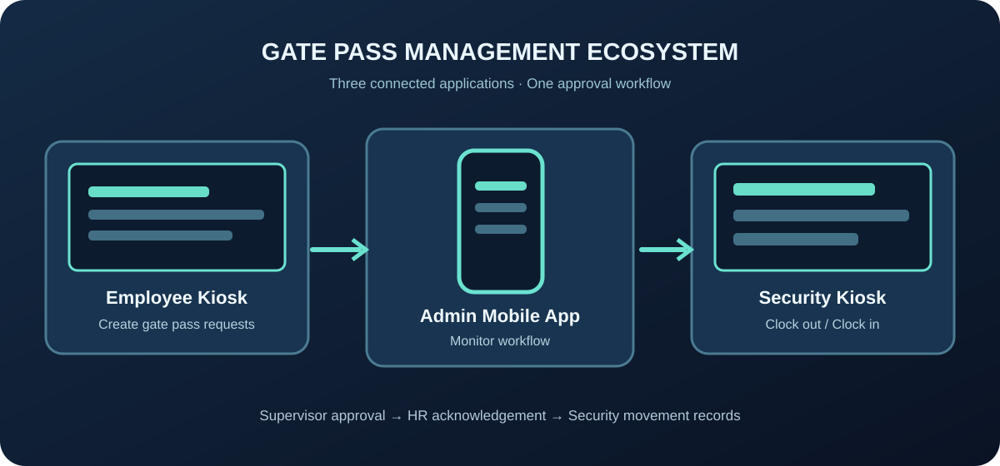
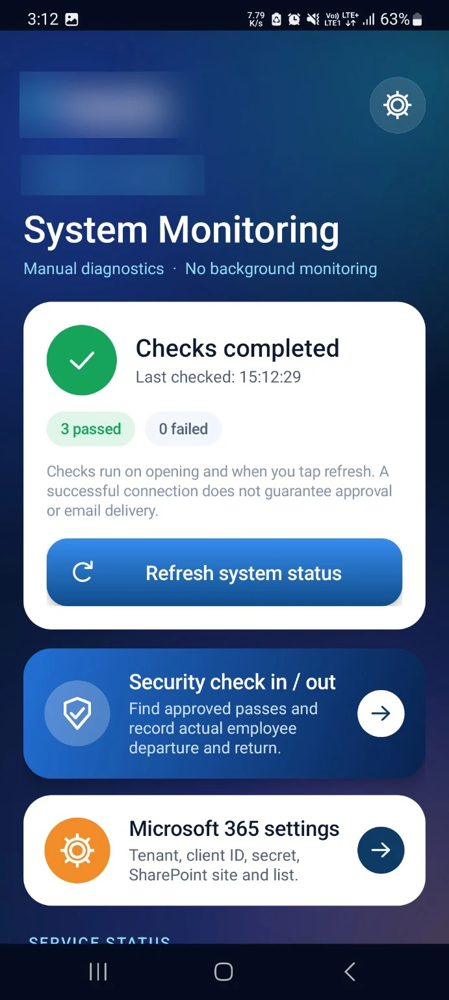
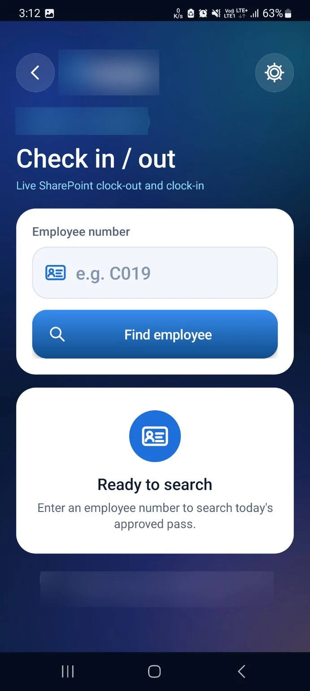
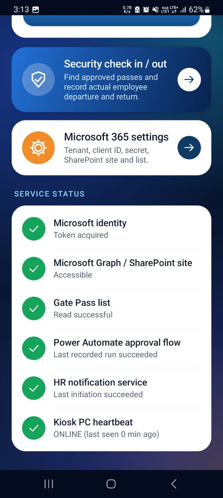

Gate Pass Management System
A purpose-built out-of-office management workflow connecting employee kiosk requests, supervisor decisions, HR acknowledgement and security movement tracking.

Three connected applications
Employee Request Kiosk
Windows app for submitting out-of-office requests.
Admin Monitoring App
Mobile app for authorized administrators to monitor request progress.
Security Guard Kiosk
Separate Windows kiosk for clock-out and clock-in only. It does not create requests.
How it works
Employee kiosk
Staff submit gate pass requests using the Windows kiosk.
Approval routing
Requests are routed to the assigned supervisor or manager for approval or rejection.
HR acknowledgement
Approved requests proceed to HR for acknowledgement through Outlook.
Security check-out and return
Security uses the companion Android app to record staff departure and return.
Central records
SharePoint supports the workflow's central records and tracking.
Admin Monitoring App · Actual interface
Original application screens presented in device-style frames. Client branding has been obscured in the portfolio images.

System Monitoring
Service diagnostics and connectivity checks.

Employee Lookup
Approved pass lookup and movement workflow.

Service Health
Microsoft 365, workflow, and kiosk heartbeat status.